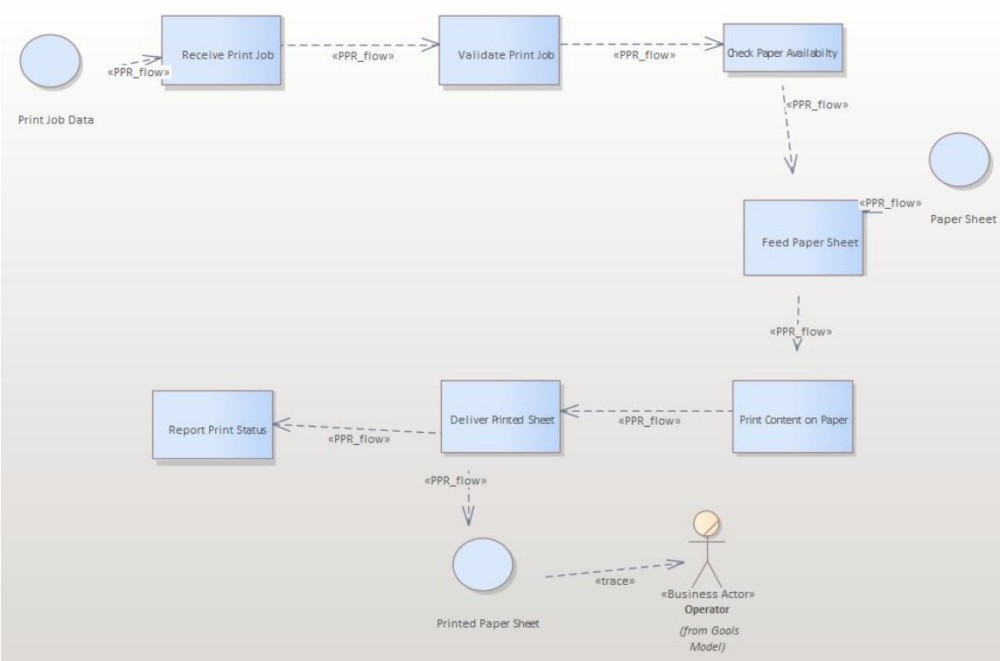
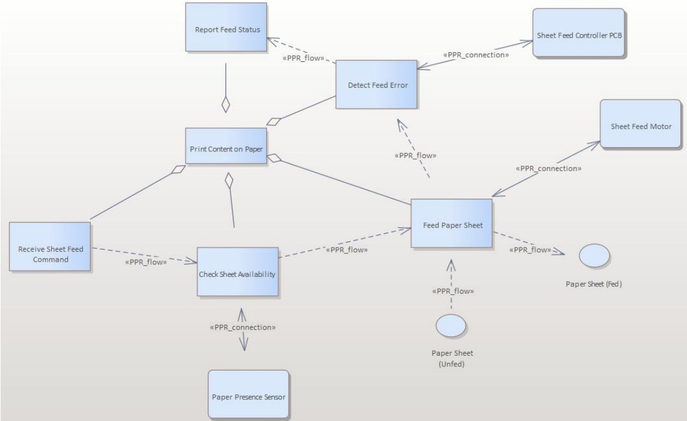

Work / P.03 · Case study
Thermal Printer MBSE Model (RAMI 4.0)
One printer modelled twice — once as a set of workstation goals with no implementation in them, then again as executable control logic — with the traceability holding across the refinement.
- Context
- Enterprise Architecture & RAMI 4.0 — M.Sc. Systems Engineering for Manufacturing, OVGU Magdeburg
- Date
- Winter Semester 2025/26
- Team
- Group project, two members
- My scope
- Business, Function and Information layers at Work Station level, and the Sheet Feed Controller end to end — all seven layers, every diagram, and traceability back to the workstation requirements. The PPR layer was joint; my teammate owned the remaining WS layers and the Platen Force Controller.
- Tools
- Enterprise Architect (Sparx Systems) · UML/SysML notation · RAMI 4.0 reference architecture
The requirement
Model a thermal printer as an Industry 4.0 asset: structure the model according to the RAMI 4.0 reference architecture, cover the layers axis in full, and show that a control device can be derived from workstation-level intent rather than asserted alongside it. The test of the model is not how many diagrams exist — it is whether a reader can follow a single requirement from the business layer down to the motor that satisfies it.
That framing sets two hard constraints. Workstation-level models must contain no implementation assumptions, or the refinement step proves nothing. And every control-device element must trace to something above it, or the hierarchy is decoration.
Approach
The Enterprise Architect project is organised as two hierarchy levels from the RAMI hierarchy axis — Work Station (the system-level view) and Control Device (implementable control logic) — with the Control Device level decomposed into two independent but cooperating subsystems: the Sheet Feed Controller and the Platen Force Controller.
Both levels are modelled across all six RAMI layers — Business, Function, Information, Communication, Integration, Asset — plus a Product–Process–Resource layer that carries the execution view. Thirty diagrams in total: ten at workstation level, and a full ten-diagram stack for each control device, so each subsystem stands on its own.
The order of work is the substance of the method. Workstation goals and behaviours first, as use cases, business requirements, functional requirements, activity flow and functional architecture — nothing about motors, sensors or PCBs. Only then the refinement into control-device functions, logical structures and physical realisations. Vertical integration comes from that refinement chain; horizontal integration between the two controllers is carried by the Information and Communication layers rather than by direct coupling.
- Business layer — system boundary, operator and supervisory actors, and the services the workstation offers. Business requirements cover operational reliability, print quality, safety and throughput; functional requirements refine those into obligations the workstation must meet without saying how.
- Function layer — activity diagram for the printing workflow including decision points and parallel activity, then a functional architecture that decomposes the workstation into interacting blocks.
- Information layer — data flow between processes, stores, external entities and gates, defining the logical interfaces the control devices later refine.
- Sheet Feed Controller (mine, end to end) — reliable sheet transport with jam prevention and safe handling as its operating constraints; sheet detection → decision → actuation as control behaviour; then down to the feed controller PCB, feed motor and paper-presence sensor at the Asset layer, and a PPR refinement of the workstation execution model.



Result
The model covers the RAMI layers axis completely at two hierarchy levels, and the refinement holds: workstation requirements resolve into control-device functions, logical structures and physical assets, with the trace links present in the model rather than described in prose. Splitting the two control devices between the two of us — each owning all seven layers of one subsystem — meant both were modelled to the same depth instead of one being sketched to fill a gap.
What I'd do differently
- The third RAMI axis is missing. The model covers Layers and Hierarchy Levels; there is no Life Cycle & Value Stream content — nothing distinguishing type from instance, nothing on development versus maintenance versus end of life. That axis is where RAMI earns its keep for an asset that will be serviced in the field, and leaving it out means the model describes a design, not a lifecycle.
- Traceability is manual. The trace links were drawn by hand, so nothing prevents a requirement from quietly losing its realisation as the model grows. Enterprise Architect can validate this, and a coverage report — every requirement, its realising element, its verifying element — would turn traceability from a claim into a check.
- Nothing is verified, only described. There are no interface specifications with data types and ranges on the Information layer, and no behavioural verification — no state machine for the feed cycle, no simulation of the jam-prevention logic. A model this size should be able to answer "what happens if the paper-presence sensor fails mid-feed?" and mine cannot.